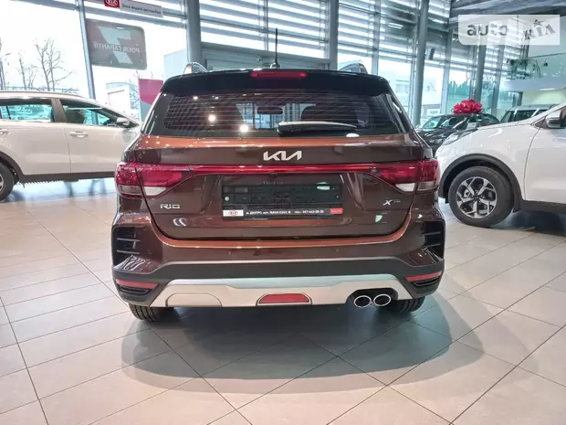
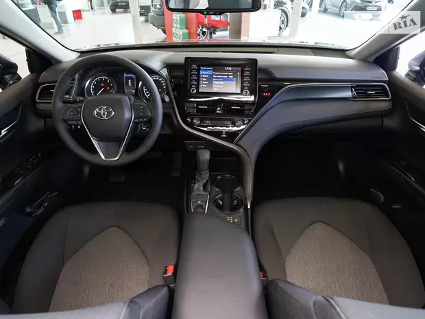
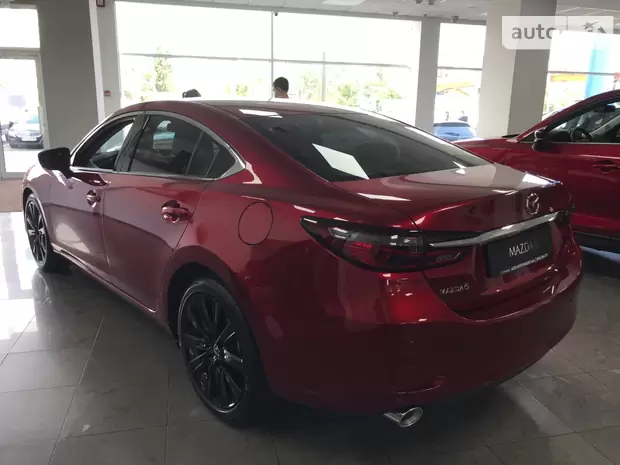
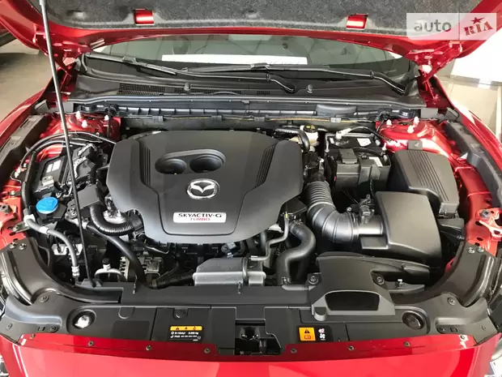

Новые авто
Новый Kia Rio X 1.6 AT (123 л.с.) Comfort 2022
| Новый Kia Rio X 1.6 AT (123 л.с.) Comfort 2022 | |
|---|---|
| Марка, модель, год | Новый Kia Rio X 1.6 AT (123 л.с.) Comfort 2022 |
| Двигатель | Бензин • 1.6 л • 123 л.с. • 6.8 л на 100 км |
| Цвет | Світло-сірий |
| Коробка передач | Автомат • 6-ст |
| Привод | Передний привод |
| Кроссовер | • 5 дверей • 5 мест |
Новый Toyota Camry 2.5 D-4S АТ (207 л.с.) Comfort 2022
| Новый Toyota Camry 2.5 D-4S АТ (207 л.с.) Comfort 2022 | |
|---|---|
| Марка, модель, год | Новый Toyota Camry 2.5 D-4S АТ (207 л.с.) Comfort 2022 |
| Двигатель | Бензин • 2.5 л • 207 л.с. • 6.8 л на 100 км |
| Цвет | Коричневый |
| Коробка передач | Автомат • 8-ст |
| Привод | Передний привод |
| Седан | 4 дверей • 5 мест |
Новый Mazda 6 2.5T AТ (231 л.с.) Premium+ Black Edition 2021
 | Новый Mazda 6 2.5T AТ (231 л.с.) Premium+ Black Edition 2021 | |
|---|---|
| Марка, модель, год | Новый Mazda 6 2.5T AТ (231 л.с.) Premium+ Black Edition 2021 |
| Двигатель | Бензин • 2.5 л • 231 л.с. • 7.7 л на 100 км |
| Цвет | Soul Red Crystal |
| Коробка передач | Автомат • 6-ст |
| Привод | Передний привод |
| Седан | 4 дверей • 5 мест |